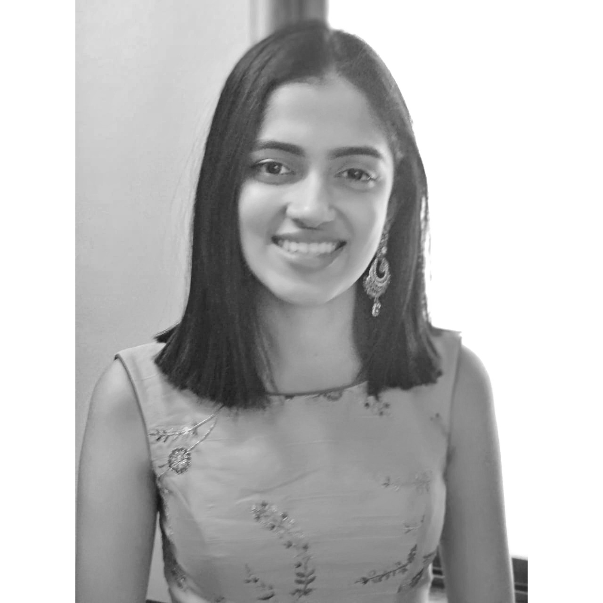

Michelle Davies Thalakottur (she/her)
Final Year B.Tech. Computer Engineering, University of Pune
michelledaviest@gmail.com
CV | Github | LinkedIn | Twitter
I am excited about Programming Languages and Compiler research and am currently working on Data Flow Analysis with Professor Uday Khedker at IIT Bombay. I have been active in STEM and Research Outreach during my undergrad and am invested in making research more accessible for students from disconnected undergrad programs. If you want to talk about PL, outreach or research in general, feel free to reach out to me!
I am interested in building theoretical abstractions and frameworks to advance problems seen in applied research topics in Programming Languages and Compilers. I like research that has its foundations in theory, is efficient, scalable and can be applied to real-life tools and applications.
I am currently working with Professor Uday Khedker at IIT Bombay on the problem of efficiently storing and operating on an incrementally discovered sparse family of sets, in order to make different analyses in Data Flow Analysis more scalable. I have previously worked with Professor Jimson Mathew at IIT Patna on problems in Dimensionality Reduction. We were interested in finding ways to translate Machine Learning research to real-world applications by extracting meaningful information from surplus data and finding ways to adapt Dimensionality Reduction algorithms to semi-supervised settings.
I have a very specific set of basic hobbies that hasn't changed over the course of my life. They are, playing with cats, reading and watching films (and film analysis videos on Youtube). My inability to name anything well shows in my cats, Mau/Blacky, Tiny-Mau and Mew. I like reading most fiction genres and a selective amount of non-fiction. Some books I think are awesome are The Mistborn Series, The Broken Earth Trilogy, A Room of One's Own and Grit. Some films I think are fantastic are Enternal Sunshine of a Spotless Mind, Wolf Children and Brooklyn.
{kind=link}
{kind=link}